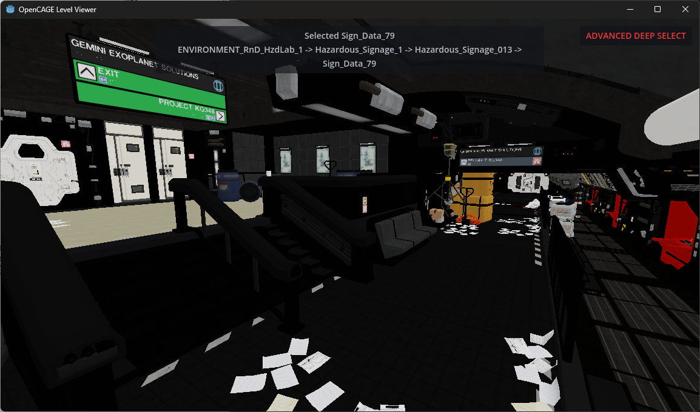

OpenCAGE's script editor includes an embedded Viewport — a 3D view of the level, docked inside the editor. As you load a level and edit scripts, the viewport stays in sync so you can position triggers, models, markers, and anything else that benefits from seeing the level in context.
This guide covers how the viewport works, how to navigate the scene, and how to use selection, deep select, transform gizmos, and render filters.

By default, the viewport starts automatically when you load a level in the script editor (unless you've turned it off with the Steam launch option below). OpenCAGE embeds a docked Viewport panel above the composite display and shows a Populating … in viewport… progress state while the scene fills in.
Once the level is populated, editing stays two-way automatically — selection, transforms, and nested composite navigation update in both the script editor and the viewport. There's nothing to connect or enable first.
The viewport panel has its own toolbar for Selection Mode, gizmo Control, Transform Snap, and Rotation Snap.
Steam includes a launch option that starts OpenCAGE with the viewport disabled. Use that if you want lower memory usage and faster load times, knowing you won't get the 3D view.
In Steam: open OpenCAGE's properties → Launch Options, and choose the option that disables the viewport. With that selected, levels load with no Viewport panel.
When you're running multiple OpenCAGE editor windows from Options → Manage Game Directories, you can also enable Launch other editors without viewport so child editors skip the 3D view and save memory.
To look around the scene, hold the right mouse button and drag. Whilst doing this, you can use W, A, S, and D to move the camera in 3D space. Q and E move down and up. Hold Shift to move faster.
Hold the middle mouse button and drag to pan the camera without changing your viewing angle.
Scroll the mouse wheel to adjust movement speed — a small readout appears in the corner when you change it.
Press Z to recenter the camera on whatever is currently selected.
When a level first loads, the camera will frame the level automatically unless you're already drilled into a nested composite with something selected.
Selection works in both directions. Click something in the script editor and it will highlight in the viewport; click something in the viewport and the script editor hierarchy will update to match.
Left-click an object in the viewport to select it. By default, this selects the relevant entity in the composite you're currently viewing in the script editor — for example, clicking a model inside a composite instance will select that composite instance entity, not the inner model directly.
Selected entities are highlighted in green in the viewport. You can click empty space or press Escape to deselect.
Entities outside the composite you're currently editing are dimmed and can't be picked, which makes it easier to focus on the area you're working on. Step into a nested composite in the script editor and the viewport will update to show that scope.
If Highlight Aliases is enabled under Options → Viewport (on by default), entities targeted by parameterized aliases in the active composite are shown with an orange highlight. The selected entity itself shows green rather than orange.
If Highlight Proxies is enabled, entities targeted by proxies are shown with a blue highlight when you've stepped into a nested composite.
You can click on render previews too — not just model references. Box volumes, position markers, character previews, spline paths, sound icons, and other filtered entity types are all selectable in the viewport (see more below).
Sometimes you want to select something deeper in the hierarchy — an entity inside a nested composite, for example. That's what deep select is for.
Set the select mode from the Viewport panel's Selection Mode toolbar, or with these number-row keys (not the numpad):
Modes are chosen directly — you don't cycle through them with a single key.
Press - (minus) to step back out one level in the hierarchy — useful if you've drilled in too far. You can see the full hierarchy in the bar at the bottom of the OpenCAGE window, and also navigate back there too.
In Cathode scripts, entities inside a nested composite aren't directly selectable from the parent composite you're viewing — the script editor needs a path to reach them. That's what aliases are for: an alias in your current composite points at a chain of entities through composite instances, ending at the thing you actually want to work with.
Deep select creates that path for you automatically. When you deep-select something, the viewport looks for an existing alias in the active composite whose path matches the entity chain you clicked through. If one already exists, it selects that. If not, it creates a new alias pointing at the right depth.
In Deep Select mode, each left-click on the same piece of geometry goes one composite level deeper — first click might select the composite instance, the next click the entity inside it, and so on. The alias's path grows to match. In Advanced Deep Select mode, a single click builds the full alias path straight to the deepest entity in one go.
Aliases created this way start out parameter-free — they're temporary helpers for navigation. If you click something else without having done anything to the alias, OpenCAGE removes it again so your composite doesn't fill up with unused aliases. Once you move an alias with the transform gizmo (which adds a position override), or otherwise give it parameters in the main editor window, it becomes a permanent part of your scripts — the same as if you'd created it manually in the flowgraph.
This is separate from the orange Highlight Aliases option, which shows entities that already have parameterized aliases in the composite you're editing. Deep select is about creating and navigating through aliases on the fly; the orange highlight is about visualizing overrides you've already set up.
Note — moving an entity via deep select (an alias) will override the position defined within the child composite. This works in a hierarchy, so aliases at the root level will override ones below. Read more about aliases in the Scripting Intro.
Once you've selected an entity, you can move and rotate it directly in the viewport using the transform gizmo. Changes sync back to the script editor and update the entity's position parameters.
With an entity selected, choose a gizmo mode from the Viewport panel's Control toolbar, or with these number-row keys:
Click and drag the coloured gizmo handles to transform the entity. The current mode is shown in a small HUD in the viewport.
Use Transform Snap and Rotation Snap on the Viewport panel toolbar to snap movement and rotation to stepped values while dragging.
Need to temporarily get something out of the way while you work on geometry behind it? With an entity selected, press H to hide it in the viewport. This only affects the viewport — it doesn't delete or modify anything in your scripts.
Press Shift + H to unhide everything you've hidden in the current composite scope.
Hides reset automatically when you navigate to a different composite or step into/out of a composite instance, so you won't accidentally carry hidden state across contexts.
Not everything in a Cathode level is a rendered model. The viewport draws previews for many function entity types so you can see triggers, markers, splines, characters, and more.
Preview types include:
Each preview type has an associated render filter. Use the docked Render Filters panel (alongside Search / Composite Browser by default) to toggle individual function types on or off. This is useful for decluttering busy levels — hide box volumes you don't care about, for example, while keeping position markers visible.
Under Options → Viewport, enable Hide Nested Script Entities to stop showing entity previews defined in nested composites. ModelReference entities are always shown regardless of render filter settings.
Under Options → Misc, Reset Render Filters On Load clears your filter toggles whenever a level loads.
Most viewport behaviour is controlled from Options → Viewport in the script editor toolbar:
Also useful: